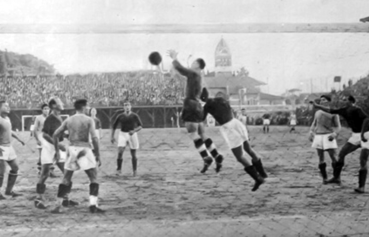

Storia
L'Associazione Sportiva Roma , meglio nota come AS Roma o più semplicemente Roma, è una società calcistica italiana con sede nella città di Roma. Milita in Serie A, la massima divisione del campionato italiano. Fondata nel 1927 grazie alla fusione di tre squadre, ha come colori sociali il rosso e il giallo, tonalità cromatiche corrispondenti al gonfalone del Campidoglio. Includendo la stagione 2024-2025, la Roma ha partecipato a 96 campionati nazionali (92 in Serie A, tre in Divisione Nazionale e uno in Serie B).
